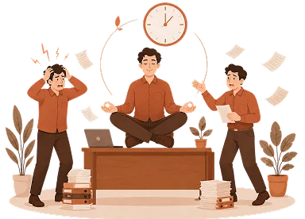
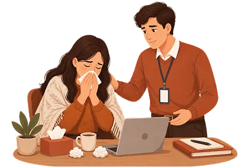
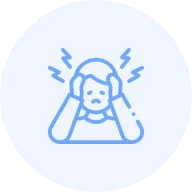

Burnout
Burnout is a state of deep physical, mental, and emotional exhaustion after long term stress. It often develops slowly. You may first notice poor sleep, low energy, irritability, or trouble focusing. Over time, you may feel empty, distant from others, and unable to do things that once felt easy. Burnout can affect work, studies, family life, and everyday activities. Support from a psychologist or workplace, or other trusted people can help you recover.
What Is Burnout?
Burnout is what happens when demands on you consistently exceed the resources you have to meet them, and this goes on for long enough that your body and mind stop being able to compensate. Burnout can come from work, but just as often from a combination of pressures on multiple fronts. Like demanding work, caregiving responsibilities at home, illness, difficult relationships, or major life changes. Moreover, many people are burned out by their home situation, not just work.
It's important to know burnout is not the same as depression. However, the two conditions can occur at the same time and are easy to confuse. Feeling burned out is a signal from your body that something needs to change. It takes courage to take it seriously and seek help at that time.
How WHO Classifies Burnout
The World Health Organization (WHO) classifies burnout in ICD-11 as an occupational phenomenon, not a medical diagnosis. (WHO) This means it is a recognised condition that brings people into contact with health services, but it is not itself a disease. The ICD-11 definition describes burnout as arising from chronic workplace stress.
Burn Out V/s Stress
Stress
Stress can be healthy in short bursts. Stress can be healthy in short bursts. You can usually recover after rest, time off, or the stressful situation ends.
Burnout
Burnout happens when stress never fully releases over a long period and eventually outpaces your capacity to recover. A difficult month at work is not burnout.
Do you feel burned out?
A psychologist can help you understand what's happening and give you a proper diagnosis. We help you find the right psychologist
What Does Burnout Feels Like ? The Three Dimension
It identifies three defining dimensions of burnout. These are not separate conditions; they are interconnected aspects of the same process.
 01
01
“I have nothing left”
Emotional exhaustion
Fatigue, numbness, physical complaints
 02
02
“I don't care anymore.”
Cynicism/depersonalisation
Withdrawal, irritability, detachment
 03
03
“I can't do anything right.”
Reduced accomplishment
Poor concentration, self doubt, low drive
What Causes Burnout?
Burnout does not have a single cause. It develops when sustained demands, whether at work, at home, or both, consistently exceed the resources available to meet them. Many people recognise one or two of these, but in severe burnout, it is common to experience many at once.
Excessive workload and
time pressure
Too much to do, not enough time, with no end in sight
Conflicting demands
Being pulled in multiple directions by different people, roles, or responsibilities simultaneously
Low control
Having little say over how, when, or at what pace you work
Unclear expectations
Not knowing what is expected of you or having expectations that shift constantly.
Life factors beyond work
Burnout is not confined to paid employment. Caregiving for a child, elderly parent, or unwell partner carries many of the same burnout generating factors: high demand, low control, limited acknowledgment, and restricted recovery time. Major life changes, long term illness, and difficult personal relationships can also contribute to or maintain burnout.

Signs Of Burnout
If you are wondering whether what you are experiencing might be burnout, the following signs can be present for weeks rather than days.
Chronic fatigue that is not improved by sleep
Dizziness or palpitations
Losing pleasure in things you used to enjoy
Difficulty concentrating
Irritated and overreacting to little things
Social withdrawal and isolation
Anxiety and constant inner turmoil
Troublesome negativity and cynicism
Do you recognize these symptoms?
Don't wait until it gets worse. A psychologist can help you understand what your body is trying to tell you and guide you through the recovery process step by step.

Signs of Burnout In Women
Women more often experience burnout as a combination of work and caregiving at home.
Typical Signs:

Signs Of Burnout In Men
Men are more likely to underreport and seek help later. Burnout often manifests itself as the following:
Typical Signs:
What Can Overlap With or Occur Alongside Burnout?
Several conditions share features with burnout or commonly occur alongside it. A clinical assessment helps clarify what is present.

Ordinary Stress And General Fatigue
Stress and fatigue are normal responses to demanding periods. Burnout does not. It persist and typically worsens when rest alone is available, because the underlying patterns have not changed.
Depression
Anxiety
ADHD
Sleep disorders
Physical and medical causes
Treatment Of Burnout Symptoms
Burnout is treated with a combination of professional help, lifestyle adjustments, and workplace accommodations. Here are the most important forms of treatment.
Psychotherapy with a psychologist
Talking to a psychologist is the most effective way to deal with burnout. The psychologist will help you understand what happened, change the patterns that led to it, and build new strategies for the future.
Cognitive behavioural therapy (CBT)
CBT helps you identify and change the thought patterns and behaviours that maintain burnout. Especially useful for those who struggle with perfectionism and high self demands.
Acceptance and Commitment Therapy
ACT helps you accept what is difficult without fighting it and find your way back to what matters to you. It is particularly effective for burnout with anxiety.
Stress management therapy
Structured training in stress management. Like body scan exercises, breathing exercises, boundary setting, and prioritization. Provided both individually and in groups.

Sick leave and arrangements
In cases of moderate to severe burnout, sick leave is often necessary to give the body and mind a chance to recover. The doctor will assess the degree and duration in consultation with you.

Find A Psychologist For Burnout
We help you find the right psychologist with experience in burnout, stress, and work related disorders. Choose the option that suits you best.
Individual therapy
One on one conversations with a licensed psychologist. Tailored to your pace and needs. Offered in clinic or digitally via video.
Digital therapy (video session)
Talk to a psychologist from where you are. Suitable for those who travel, have children to care for, or don't live near a clinic.
Self Help From Burn Out
Recovering from burnout is a process , not an instant . It requires patience, structure, and good support. Here is a typical recovery process in collaboration with a psychologist.
Accept and Acknowledge
The first step is to realize that you are burned out and need help. Many people spend time in denial, which is understandable, but it delays recovery.
Calm and Stabilisation
The body and nervous system need to come down from alert readiness. Sleep, food, and very reduced pressure are critical in this phase.
Understand What Happened
With a psychologist, you work to map out what causes you to burn out. Like patterns, triggers, values, and boundaries.
Building New Strategies
You will learn specific tools for boundary setting, stress management, and self compassion.
Gradual Rollback
Gradual return to work occurs in collaboration with a psychologist, doctor, and employer.
Adults With ADHD Are At Higher Risk Of Burnout.
The reason is that the brain of a person with ADHD uses much more energy to compensate for difficulties with concentration, time planning, and impulse control than a neurotypical brain.
Many people with ADHD have spent years pushing themselves extra hard to keep up. ADHD burnout is often characterized by an extra deep exhaustion. If you suspect that ADHD may be behind your difficulties, it is important to have a thorough evaluation. Proper treatment of ADHD prevents new periods of burnout.
See our ADHD page →
Assessment for ADHD and burnout
Psykolog.no helps you find psychologists with special expertise in ADHD assessment and treatment.
Depression Or Burn Out
The two conditions overlap and can occur at the same time. But there are important differences that are important for treatment. A psychologist can help you distinguish between them.
Burnout
Burnout is usually caused by prolonged stress,
Burnout often causes exhaustion and apathy
Self esteem is often affected by work related struggles in burnout
Hopelessness in burnout is usually situation specific,
Suicidal thoughts are uncommon in burnout alone
Burnout is treated with stress management, rest, and therapy.
Depression
While depression can occur without a clear cause.
Whereas depression is marked by persistent sadness and low mood.
While depression causes a more general sense of worthlessness.
Whereas in depression it is more persistent.
But may occur in severe depression.
While depression may require psychotherapy and medication.
Burnout increases the risk of developing depression. Many people have both conditions at the same time. A psychologist can do a thorough assessment and make the correct diagnosis.
See our depression page →When Should You Contact A Psychologist
Consider seeking professional assessment or support when:
Symptoms for more than 3–4 weeks without improvement
You are not functioning well at work or at home.
Self help doesn't help enough
You suspect ADHD

You are worried about depression.
You've been burned out before.
Questions & Answers
Still unsure whether speaking to a psychologist is the right next step? Book a first conversation.
These are the questions people ask us most often before booking their first consultation.
Mental health is about how you feel about yourself, how you cope with everyday challenges, and how you function in relationships and work. Good mental health is not the absence of difficult emotions. However, it is the ability to manage them.
Learn More About Mental Health.


Find A Psychologist For Bipolar Disorder
Psykolog.no is Norway's easiest way to find a licensed psychologist. We match you with a psychologist who has experience with bipolar disorder, assessment, therapy and medication management.
You can choose between a physical and a video consultation.
Find A Psychologist